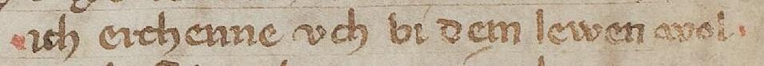

ReadingMark
- Bezeichnung (deutsch)
- Lesemarke
- Bezeichnung (englisch)
- reading mark
- Definition (deutsch)
- Marke, die beim Lesen angebracht wurde, um bei einem künftigen Rezeptionsgang die Aufmerksamkeit auf die markierte Stelle zu ziehen.
- Definition (englisch)
- A mark which has been produced while reading in order to attract the attention to the marked place during a future reception step.
- URI dieses Konzepts
- https://lod.ub.uni-heidelberg.de/ontologies/heieditions/hc/current/ReadingMark
- Typ der RDF-Ressource (rdf:type)
- https://www.w3.org/2002/07/owl#Class
- Unterklasse von (rdfs:subClassOf)
- Metamark
- RDF-Auszüge zu dieser Ressource
- Turtle, XML/RDF, JSON-LD
- Verwendung
- Element <metamark>, Attribut @ana
Beispiel
Rote Lesemarken vor und nach einem Vers.
Florenz, Biblioteca Nazionale Centrale (Nationalbibliothek), Cod. B.R. 226, S. 379, https://digi.ub.uni-heidelberg.de/diglit/bncf_cod_b_r_226/0097, Abbildungsrechte möglicherweise vorbehalten.